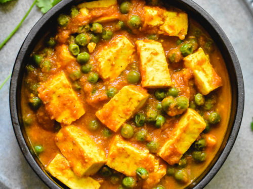

Matar Paneer

Ingredients
- 350g Paneer
- 50g matar
- 4tsp butter
Procedure
- Step 1
- Preheat oven to 350 degrees F (175 degrees
- Step 2
- Preheat oven to 350 degrees F (175 degrees
- Step 3
- Preheat oven to 350 degrees F (175 degrees
- Step 4
-
- Preheat oven to 350 degrees F (175 degrees